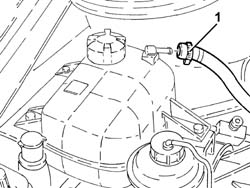
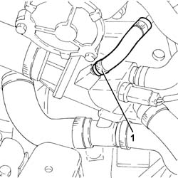
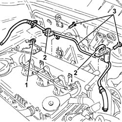

1088D57 Engine coolant RETURN PIPE to SUPPLY RESERVOIR - R.R.
- Path
- Procedures > 10 ENGINE > 1088 ENGINE COOLING > 1088D COOLANT PIPES AND HOSES > 1088D57 Engine coolant RETURN PIPE to SUPPLY RESERVOIR - R.R.
- Kind
- repair procedure (removal / refitting; the operation number is the code)
- Applies to
- all engines; all production periods
- Interactive page
- https://sloeber94.github.io/elrnDB-fDbl/en/#/2584510
Applies to: all engines; all production periods
 Removing
Removing
 Refitting
RefittingProceed with the removal 5530B10 battery - r+r .
Proceed with the removal 5530B52 Battery DRIP TRAY/SUPPORT - R.R. .
Proceed with the removal 1044B10 fuel filter assembly - r + r or replace .
Proceed with the removal 1080C24 e.g.r. system solenoid - r + r .
1. Loosen the band and disconnect the engine coolant return pipe to the supply reservoir, reservoir side.

Applies to: all engines; all production periods
1. Loosen the band and disconnect the engine coolant return pipe to the supply reservoir, thermostat side.

Applies to: all engines; all production periods
1. Loosen the band and disconnect the outlet pipe from the cylinder head, engine coolant return pipe to the coolant reservoir side.
2. Release the fuel pipes from the fastenings on the engine coolant return pipe to the supply reservoir.
3. Undo the fastenings and remove the engine coolant return pipe to the supply reservoir.

Applies to: all engines; all production periods
Refitting
RemovingPlace the engine coolant return pipe to the supply reservoir back in its housing and secure it.
Secure the fuel pipes to the fastenings on the engine coolant return pipe to the supply reservoir.
Connect the oulet pipe from the cylinder head, engine coolant return pipe to the supply reservoir side and tighten the band.
Connect the engine coolant return pipe to the supply reservoir, thermostat side and tighten the band.
Connect the engnie coolant return pipe to the supply reservoir, reservoir side and tighten the band.
Proceed with the refitting 1080C24 e.g.r. system solenoid - r + r .
Proceed with the refitting 1044B10 fuel filter assembly - r + r or replace .
Proceed with the refitting 5530B52 Battery DRIP TRAY/SUPPORT - R.R. .
Proceed with the refitting 5530B10 battery - r+r .
Refill the engine cooling system with coolant 0010T20 coolant change .
Topics linked from this page (5)
- 0010T20 coolant change
- 1044B10 fuel filter assembly - r + r or replace
- 1080C24 e.g.r. system solenoid - r + r
- 5530B10 battery - r+r
- 5530B52 Battery DRIP TRAY/SUPPORT - R.R.